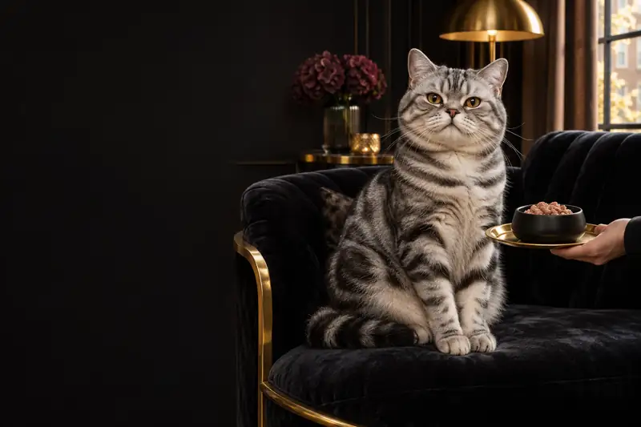

Koci Notatnik / Kocie opowieści
Mój lifestyle · humor · 4 min czytaniaDzień z życia kociego influencera. Mój niewolnik też występuje.
Hej, kochani. Pytacie, jak łączę luksusowe życie, pielęgnację futra i prowadzenie bloga. Odpowiedź jest prosta: mam człowieka. Polecam. Trochę je, ale umie otwierać saszetki.

Dziś pokażę Wam zwykły dzień z mojego życia. Bez upiększania rzeczywistości. Człowiek już odkurzył, poprawił poduszki i sprzątnął kuwetę, więc możemy zaczynać.
05:03. Pobudka mojego niewolnika
Ja wstaję wyspany. On po prostu wstaje. To drobna różnica, ale świetnie oddaje podział obowiązków.
Najpierw delikatnie dotykam jego nosa. Brak reakcji. Staję na klatce piersiowej i patrzę mu w duszę. Budzi się z miną, jakby właśnie przegrał dyskusję, która jeszcze się nie zaczęła.
— Jest piąta — mówi.
Dziękuję, zegarynko. Teraz śniadanie.
05:11. Śniadanie do apartamentu
Wjeżdża miseczka. Czarna, oczywiście. Dbamy o spójność profilu. Człowiek podaje posiłek i pyta: „Zadowolony?”.
Nie odpowiadam od razu. Dobra recenzja potrzebuje czasu.
Wącham. Patrzę na niego. Jeszcze raz wącham. Wytrzymuję napięcie, choć w środku jestem już przy trzecim kęsie.
— Przecież to twoja ulubiona!
Kochani, ulubiona karma jest ulubiona do chwili publikacji. Potem rynek się zmienia.
08:00. Ktoś musi zarobić na mój styl życia
Mój niewolnik wychodzi do pracy. Całuje mnie w głowę i mówi, żebym był grzeczny. Ja niczego nie obiecuję. Nie podpisuję współprac bez sprawdzenia warunków.
Podczas jego nieobecności mam napięty grafik: światło na parapecie o dziewiątej, drzemka na czarnym fotelu o dziesiątej i kontrola miękkości pościeli w południe. Do tego muszę znaleźć najlepszy profil. Oba są świetne, więc podejmowanie decyzji jest wyczerpujące.
Wy też odpoczywajcie. Najlepiej na czyimś świeżo upranym swetrze. Przy okazji zostawicie znak wodny z sierści.
16:30. Mój fotograf wraca na drugą zmianę
— Ale miałem ciężki dzień — wzdycha człowiek.
Rozumiem. Ja musiałem trzy razy przesunąć się za słońcem. Nie każdy jest gotowy na pracę zdalną.
Siadam więc na fotelu i daję mu szansę realizować się artystycznie. Robi czternaście zdjęć. Na trzynastu wyglądam jak bóstwo. Czternaste jest poruszone. To jego wina.
Próbuje poprawić mi łapę do kadru. Chowam ją pod siebie. Naturalność, kochani. Naturalność i absolutna kontrola nad produkcją.
19:00. Luksus to mieć własnego odźwiernego
Siadam pod drzwiami. Miau. Człowiek otwiera. Patrzę w dal, jakbym rozważał przeprowadzkę do większej rezydencji.
— Wchodzisz czy nie?
Nie. Chciałem otwarte drzwi. Nie wiem, skąd pomysł, że każdy produkt trzeba od razu konsumować.
Zamyka.
Miau.
Zapiszcie sobie ten trik, moi koci obserwatorzy. Świetnie rozwija u człowieka cierpliwość i mięśnie przedramion.
21:00. Strefa premium: jego kolana
Człowiek zrobił herbatę i włączył serial. Kładę się na nim. Pilot zostaje poza zasięgiem. Herbata również. Odcinek można obejrzeć później. Mojej obecności nie da się przewinąć.
Przez telefon szepcze: „Nie mogę teraz, kot na mnie śpi”.
Widzicie? Sam komunikuje swoją niedostępność. Jestem bardzo dumny z tego szkolenia.
23:00. Tego zwykle nie ma na zdjęciach
Czasem mój człowiek ma taki dzień, że nawet nie szuka pilota. Siada i patrzy przed siebie. Wtedy nie robię przedstawienia. Nie żądam otwierania drzwi.
Przychodzę. Opieram łeb o jego rękę. Mruczę.
— Dobrze, że jesteś — mówi cicho.
No wiem. Trudno znaleźć dobrego przełożonego. Takiego, który dopilnuje miski, ale też zauważy, kiedy jego człowiek potrzebuje chwili spokoju.
Zostaję, aż odetchnie lżej.
To tyle na dziś, kochani. Zamykam laptop, bo mój niewolnik musi odpocząć. Jutro o piątej ma śniadaniową zmianę, a ja nie mogę prowadzić luksusowego życia z niewyspanym personelem.
Humorystyczna opowieść fikcyjnego kociego influencera.